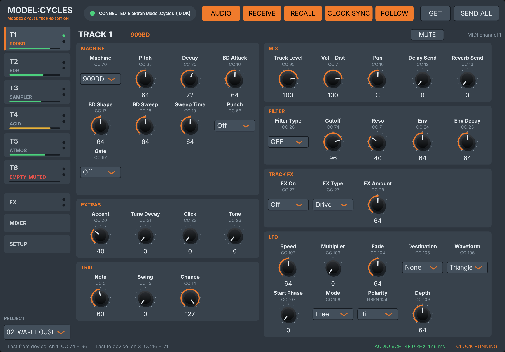
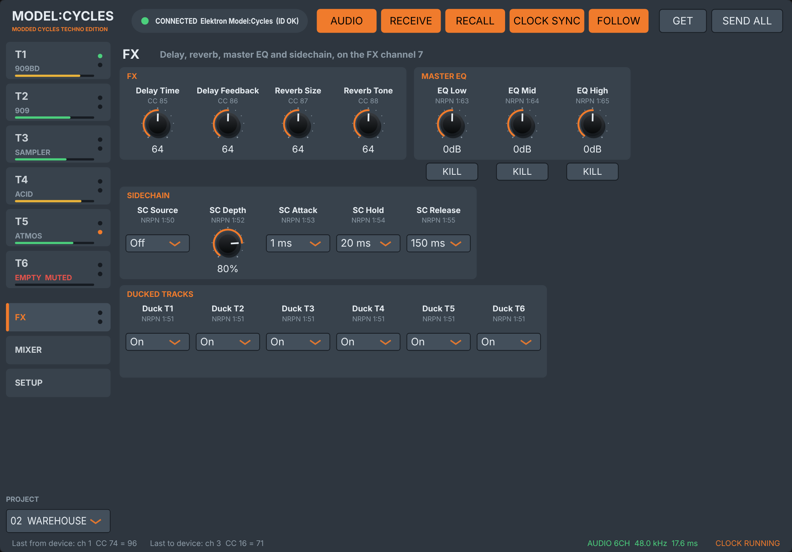
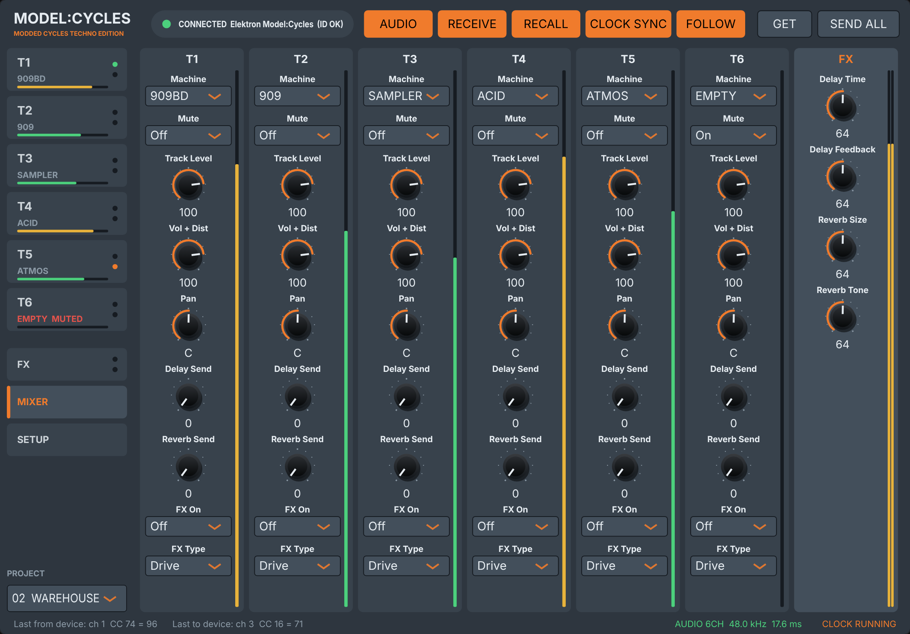
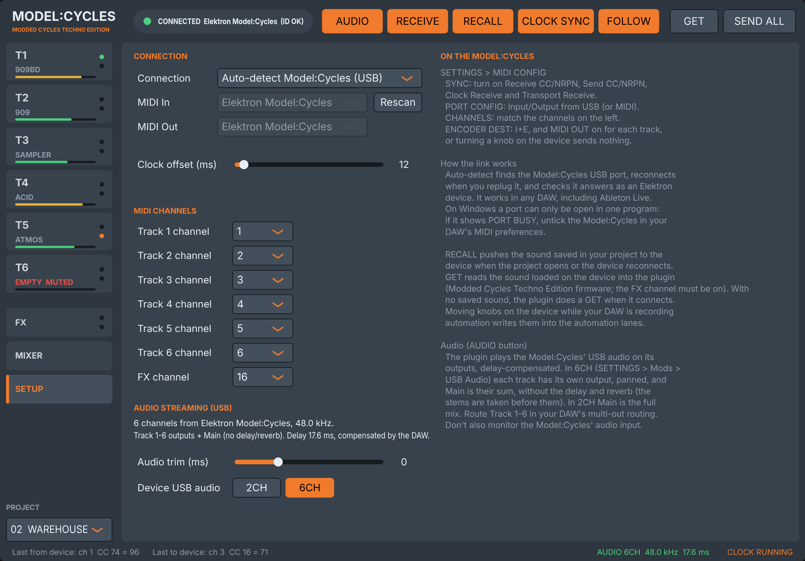
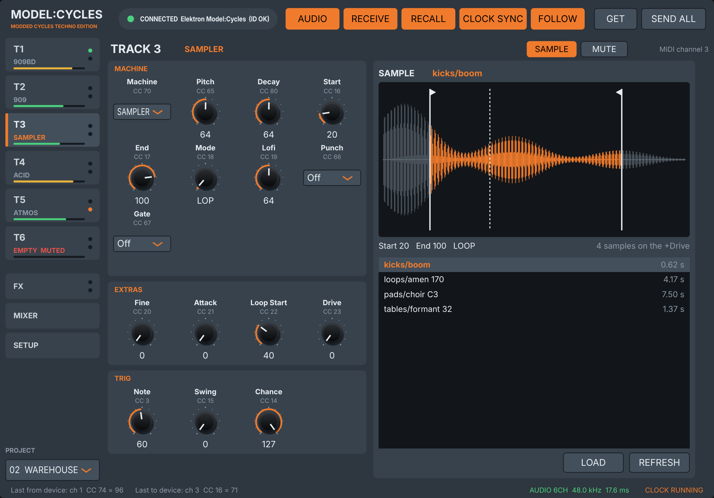

Modded Cycles Techno Edition 1.0 turns the Model:Cycles into a 25-machine instrument: 19 new voices next to Elektron's six, from circuit-modelled 909, 808 and 606 drums to acid and FM basses, pads and a sampler, with a filter and an insert effect on every track, four extra parameters per machine, a sidechain, a master EQ, switchable 6-channel USB audio, and a plug-in that brings it all into your DAW.
The firmware is Elektron's Model:Cycles OS 1.13 with these modifications, and nothing else:
| Mod | What you get | Where |
|---|---|---|
| 19 added machines | 909BD, 808BD, RUMBL, 909, 606, 808, METL2, BIAS, ACID, GROWL, MACRO, VACF, XMOD, DX, ATMOS, SAMPLER, GRANULAR, WAVETABLE and EMPTY, after Elektron's six (25 in total). | Ch. 6 |
| Machine selection | A MACHINES list with each machine's icon and name; press LEVEL/DATA to load (Mch Clk); machines that would overload the CPU are greyed out. | Ch. 3, 8 |
| Knob layer | Double-tap PUNCH and the knobs play the extras, the filter and the insert FX; the PUNCH LED blinks. Punch itself moves to a long press. | Ch. 3, 8 |
| Extra parameters | Up to four more parameters per added machine, on the knob layer's PITCH / DECAY / COLOR / SHAPE. The drum machines get Accent and Drift, after the real 909, 808 and 606. | Ch. 5 |
| Per-track filter | LP / HP / BP and 24 dB LP24 / HP24 with resonance and an envelope on every track, logarithmic cutoff. | Ch. 4 |
| Insert FX | One effect per track: drive, bitcrush, fold, ring modulator, resonator, RAT distortion. | Ch. 4 |
| Sampler | Send samples with Elektron Transfer; play them on SAMPLER, GRANULAR and WAVETABLE. | Ch. 7 |
| USB audio 2CH / 6CH | SETTINGS › Mods › USB Out: the stereo mix, or the six tracks on six USB channels, with overload recovery. | Ch. 8 |
| Sidechain | One track ducks the others on every trig (the kick pumping the bass), saved with the project. | Ch. 8 |
| Master EQ | A DJ-style LOW / MID / HIGH EQ with kills on the whole mix: double-tap GATE. | Ch. 3 |
| LFO polarity | FUNC + LFO › Pol: BI (stock) or UNI per track, so the LFO only moves one way. | Ch. 3 |
| Trk Trg | Track buttons can select a track without playing it. | Ch. 3, 8 |
| CPU management | A CPU charge per machine and a budget on the MACHINES list (CPU Lim); the send delay and reverb rest when nothing is sent to them; the machines that play run from fast internal memory; a CPU monitor with each track's share. | Ch. 8, 11 |
| Screens | A three-line sound browser with scrolling names, level and pan as numbers, and a boot animation. | Ch. 3 |
| MIDI for everything | Every added parameter on a CC and an NRPN; sidechain, USB 2CH / 6CH, samples, master EQ and projects by NRPN; GET sends the whole loaded sound back; the selected track and the loaded machine are sent out. The stock OS ignores every NRPN it receives; this firmware takes them in. | Ch. 9 |
| Written as | Means |
|---|---|
| LAYER + PITCH | With the knob layer on (double-tap PUNCH, the PUNCH LED blinks), turn PITCH. Holding MACHINES while you turn does the same. |
| FUNC + LEVEL/DATA | Hold FUNC and turn (or press) the LEVEL/DATA encoder. |
| SETTINGS › Device › CPU | Open SETTINGS, select the Device row, then the CPU row. LEVEL/DATA scrolls and presses. |
| Extra 1–4 | The four extra parameters of a machine, on the knob layer's PITCH, DECAY, COLOR, SHAPE. |
| ACC | The short name the screen shows for a parameter. |
The firmware is never distributed as a file: you build it on your computer from Elektron's official OS file, with the patcher in the Modded Cycles Techno Edition repository. You need Python 3.8 or later and nothing else.
python3 patch.py path/to/model-cycles_OS1.13.syx (on Windows, py instead of python3).The patcher checks that your file is the official one, applies the mods, checks the result against its expected fingerprint and writes modded-cycles-techno-edition.syx next to your file. If anything does not match, it stops and writes nothing.
Only the main OS is changed: the bootloader and the startup menu stay exactly as Elektron made them, so the official OS can always be put back. Back up your projects and samples with Elektron Transfer first.
Over USB: open Elektron Transfer, connect the Cycles and drop modded-cycles-techno-edition.syx on it, as for an official OS update.
To go back to the stock firmware, send Elektron's official OS 1.13 file the same way. Before that, set any track that uses an added machine (7–25) back to one of the six original machines, so your projects open cleanly on the stock OS.
Experimental firmware. Every part of it is tested in emulation, running the Model:Cycles' own code (Chapter 11), and has been played on real hardware, but it is not made or supported by Elektron. Use it at your own risk, and back up your projects before flashing.
Every key combination the firmware adds or changes, the machine list, and what each knob does on each added machine.
PITCH Extra 1 CC 20 | DECAY Extra 2 CC 21 | COLOR Extra 3 CC 22 | SHAPE Extra 4 CC 23 | SWEEP Cutoff CC 74 | CONTOUR Reso CC 71 | DELAY Env CC 24 | REVERB Env Decay CC 25 | LFO SPEED Type CC 26 | SWING FX Type CC 27 | CHANCE FX Amt CC 28 |
| Press | Where | Does |
|---|---|---|
| PUNCH twice, quickly | Any track (Knb Lyr PUNCH, the default) | Knob layer on or off: the knobs play the extras, filter and insert FX. The PUNCH LED blinks while it is on. |
| PUNCH held ½ s | Any track (Knb Lyr PUNCH) | Punch on or off (with TRK held: all six tracks). A single short press does nothing. |
| Layer + PITCH / DECAY / COLOR / SHAPE | Added machines | Extra 1 / 2 / 3 / 4 (CC 20–23). |
| Layer + SWEEP | Every track | Filter Cutoff, 20 Hz–20 kHz (CC 74). |
| Layer + CONTOUR | Every track | Filter Reso (CC 71). |
| Layer + DELAY | Every track | Filter Env amount, bipolar (CC 24). |
| Layer + REVERB | Every track | Filter Env Decay, 5 ms–10 s (CC 25). |
| Layer + LFO SPEED | Every track | Filter Type: OFF / LP / HP / BP / LP24 / HP24 (CC 26). |
| Layer + SWING | Every track | Insert FX Type: OFF / DRV / CRS / FLD / RNG / RES / RAT (CC 27). |
| Layer + CHANCE | Every track | Insert FX Amount, 0–127 (CC 28). |
| MACHINES held + any of the knobs above | Any track | The same parameters as the layer, while MACHINES is held. |
| MACHINES | Any track | Opens the MACHINES list; turn LEVEL/DATA to choose one of 25 machines. |
| LEVEL/DATA (press) | MACHINES list, Mch Clk ON | Loads the machine under the “>” and closes the list. Turning alone only moves the cursor; the loaded machine keeps its box. |
| Knobs while the MACHINES list is open | Knb Lyr MACH | The layer's parameters. Press MACHINES to leave. |
| Hold trig + LEVEL/DATA | MACHINES list | Locks a machine on that trig (stock behaviour; the locked line is framed). |
| FUNC + MACHINES | Any track | Sound browser, three lines, long names scroll. On a SAMPLER / GRANULAR / WAVETABLE track, choosing a sample file loads it. |
| LEVEL/DATA (turn) | Main screen | Track level, shown as 0–127. |
| FUNC + LEVEL/DATA | Main screen | Track pan, shown as −64 to 63. |
| FUNC + PITCH | MACRO | Lo-fi: left = sample rate (46K…4K), right = bits (12B…2B), centre = off. On other machines it still steps the note in semitones. |
| PUNCH held ½ s | ACID | Off = saw, on = square. |
| FUNC + LFO › Pol | Any track | LFO polarity: BI (stock) or UNI; press LEVEL/DATA to switch. |
| GATE twice, quickly | Any track | Master EQ layer on or off: PITCH / DECAY / COLOR = LOW / MID / HIGH. The GATE LED blinks while it is on. |
| GATE held ½ s | Any track | GATE on or off (a single short press does nothing). |
| GATE on, STOP / PLAY | ATMOS | Drone: the track plays by itself while the sequencer runs; STOP fades it out with DECAY, PLAY brings it back. |
| T1…T6 | Trk Trg OFF | Selects the track without playing it. |
| TRK + T1…T6 | Trk Trg OFF | Selects the track and plays it (the reverse of the stock OS). |
| Trig LEN longer than the gap | ACID | Slide into the next note instead of retriggering. |
| SETTINGS › Mods › USB Out, press LEVEL/DATA | Settings | Toggles 2CH (stereo mix) and 6CH (six tracks). The computer sees the Cycles reconnect. |
| SETTINGS › Mods › SC rows | Settings | Sidechain: source, depth, attack, hold, release; Duck T1–T6 (Ch. 8). |
| SETTINGS › Mods › Trk Trg / Mch Clk / Knb Lyr | Settings | Track buttons select only; press to load a machine; PUNCH (default) or MACH for the knob layer. |
| SETTINGS › Mods › CPU Lim | Settings | The limit for greying out machines: 70 % (default), 75 … 95, OFF, 60, 65. |
| SETTINGS › Device › Transfer | Settings | CYC (normal) or SMP (Elektron Transfer sees a Model:Samples, to send samples). Back to CYC at each power-on. |
| SETTINGS › Device › CPU | Settings | Opens the CPU monitor. Turn LEVEL/DATA right for each track's share, left to go back. |
| Hold FUNC at power-on, then TRIG 4 | Startup | Startup menu, OS UPGRADE over MIDI IN (recovery). |
| # | Machine | Type | # | Machine | Type | |
|---|---|---|---|---|---|---|
| 1 | KICK | Stock | 14 | BIAS | Percussion | |
| 2 | SNARE | Stock | 15 | ACID | Bass | |
| 3 | METAL | Stock | 16 | GROWL | Bass | |
| 4 | PERC | Stock | 17 | MACRO | Synth | |
| 5 | TONE | Stock | 18 | VACF | Synth | |
| 6 | CHORD | Stock | 19 | XMOD | Synth | |
| 7 | 909BD | Kick | 20 | DX | Synth | |
| 8 | 808BD | Kick | 21 | ATMOS | Pad | |
| 9 | RUMBL | Kick | 22 | SAMPLER | Sample | |
| 10 | 909 | Drums | 23 | GRANULAR | Sample | |
| 11 | 606 | Drums | 24 | WAVETABLE | Sample | |
| 12 | 808 | Hats & cymbal | 25 | EMPTY | Utility | |
| 13 | METL2 | Metal |
The stock machines (1–6) keep Elektron's knobs. CC numbers are those the Model:Cycles uses for every machine.
| # | Machine | COLOR · CC 16 | SHAPE · CC 17 | SWEEP · CC 18 | CONTOUR · CC 19 |
|---|---|---|---|---|---|
| 7 | 909BD | BD Attack | BD Shape | BD Sweep | Sweep Time |
| 8 | 808BD | BD Tone | BD Drop | Drop Time | Accent |
| 9 | RUMBL | Tail | Damp | Drive | Hold |
| 10 | 909 | Tone/ Noise | Voice | Sweep/ Spread | Time/ Burst |
| 11 | 606 | Tone | Voice | Sweep | Noise |
| 12 | 808 | Color/ Tone | Voice HPF | Res/Hi Decay | Noise/ Spread |
| 13 | METL2 | Struct | Bright | Position | Exciter |
| 14 | BIAS | Harm | Morph | Spread | Fold |
| 15 | ACID | Cutoff | Reso | Env Mod | Drive |
| 16 | GROWL | Detune | Growl Rate | Growl Depth | Tone |
| 17 | MACRO | Timbre | Model | Color | Env Timbre |
| 18 | VACF | Cutoff | Reso | Env Mod | Wave |
| 19 | XMOD | Timbre | Mod Ratio | Mod Wave | Algo |
| 20 | DX | Patch | Bright | Env Time | Algo |
| 21 | ATMOS | Color | Chord | Drift | Space |
| 22 | SAMPLER | Start | End | Mode | Lofi |
| 23 | GRANULAR | Position | Size | Density | Spray |
| 24 | WAVETABLE | Position | Warp | Env | Env Speed |
| 25 | EMPTY |
Double-tap PUNCH for the knob layer and turn the knob (or hold MACHINES and turn). Short screen names in amber. Default 0 is always the machine's plain sound.
| # | Machine | + PITCH · CC 20 | + DECAY · CC 21 | + COLOR · CC 22 | + SHAPE · CC 23 |
|---|---|---|---|---|---|
| 7 | 909BD | Accent ACC | Tune Decay TDEC | Click CLIK | Tone TONE |
| 8 | 808BD | Drift DRFT | Tail TAIL | Click CLIK | — |
| 9 | RUMBL | Sweep SWP | Sweep Time STIM | Rumble Level RLVL | Tail Pitch TPIT |
| 10 | 909 | Accent ACC | Range/ Tail TAIL | Drift DRFT | Tone TONE |
| 11 | 606 | Drift DRFT | Long Decay LONG | Sweep SWP | Accent Level ACC |
| 12 | 808 | Metal Tune TUNE | Drift DRFT | Filter/ Curve FCRV | Accent Level ACC |
| 13 | METL2 | Dent DENT | Scrape SCRP | Hi Damp HDMP | Drive DRV |
| 14 | BIAS | Liquid LIQ | Liq Time LQTM | Strike STRK | Drive DRV |
| 15 | ACID | Slide Time SLID | Filter FM FFM | Muffler MUFF | Accent ACC |
| 16 | GROWL | Sub Level SUB | Attack ATK | Noise NOIS | Drive DRV |
| 17 | MACRO | Attack ATK | Env Color ENVC | Lofi Bits BITS | Lofi Rate RATE |
| 18 | VACF | Sync SYNC | Detune DET | Sub SUB | Drive DRV |
| 19 | XMOD | Car Wave CWAV | Mod Env MENV | Detune DET | Crush CRSH |
| 20 | DX | Feedback FB | Op6 Ratio OP6R | Vel Sens VELS | Detune DET |
| 21 | ATMOS | Swell SWEL | Air AIR | Wobble WOBL | Width WIDE |
| 22 | SAMPLER | Fine FINE | Attack ATK | Loop Start LPST | Drive DRV |
| 23 | GRANULAR | Spread SPRD | Window WIN | Scan SCAN | Reverse REV |
| 24 | WAVETABLE | Sub SUB | Detune DET | Crush CRSH | Drive DRV |
| 25 | EMPTY | — | — | — | — |
The screens you meet all the time: the MACHINES list, the sound browser and the level and pan readouts.
Select a track and press MACHINES. The screen shows the machine's small icon on the left (K, S, M, P, T, C, or the bars, saw-teeth, waves and static icons of the added types), four machine names on the right with a “>” in front of the selected one, arrows at the right edge, and a counter (for example 09/25) in the title bar. Turn LEVEL/DATA to move through the 25 machines; the arrows go hollow at either end.
Click to load (Mch Clk ON, the default). Turning LEVEL/DATA only moves the “>”; the machine that is loaded keeps its line in an inverted box. Press LEVEL/DATA to load the machine under the “>”, and the screen closes as usual. Closing the screen any other way changes nothing, so a bump of the encoder while you work no longer changes the machine. Hold TRK while you press and all six tracks move by the same number of steps, as TRK + turn does on the stock OS. With Mch Clk OFF, turning loads at once, as stock.
A machine can be locked on a trig as on the stock OS: hold the trig and turn LEVEL/DATA (this always works at once, Mch Clk or not). The locked machine's line is framed.
Names can be up to 11 characters on this screen, so SAMPLER and WAVETABLE are spelled out in full.
CPU budget (greyed-out machines). Each machine has a fixed CPU charge (its heaviest measured cost; see the appendix), and each track adds its filter and insert FX. A machine that would take the six tracks over the limit set in SETTINGS › Mods › CPU Lim is shown greyed out (half-lit) and the “>” skips it. While the list is open, the title shows the total load in % with the machine under the “>” on this track: the rest of the OS (about 31 %), 8 % more while the computer reads the USB audio, the master EQ when it is not flat, 8 % less while the delay and reverb rest, and the six tracks. It follows the CPU page closely, so a new project reads about 31 %. You are never locked: a machine that does not raise the load is always allowed, so an older, heavy project can always be lightened. With TRK held (all six tracks), the load counts that machine six times. A machine locked on a trig is not checked.
EMPTY is the last machine: silence at almost no CPU. A new project, or a cleared kit, puts EMPTY on all six tracks, so you start with the whole budget free.
The extras, the filter and the insert FX are played from the knob layer, so both hands stay free. It is the default way (SETTINGS › Mods › Knb Lyr = PUNCH):
Press FUNC + MACHINES to open the sound (preset) browser.
On the main screen, turning LEVEL/DATA shows the track level (0–127) in digits in place of the loudspeaker icon, and FUNC + LEVEL/DATA shows the pan (−64 to 63). The number disappears 3–4 seconds after you stop. LEVEL/DATA moves in steps of 1, so every value is reachable. Changes by MIDI or by loading a project show nothing.
At power-on the screen shows the logo (four rounded squares popping in), then “modded cycles” and “techno edition” typing themselves on two lines, instead of the tile animation. The finished screen holds about a second longer than the stock animation. Holding FUNC at power-on still opens the startup menu.
Press FUNC + LFO to open LFO Setup. After Rst, Fde and Sph it has a fourth row, Pol: scroll down with LEVEL/DATA and press it to switch the selected track between BI (the stock LFO, the default) and UNI.
In UNI the triangle, sine, square, saw and random waves are squeezed to the 0…1 range: with a positive DEP the parameter only rises from where you set it, with a negative DEP it only falls. An LFO on the filter opens it and never closes it below the knob. EXP and RMP already worked that way and are unchanged.
Trk Trg. On the stock OS a track button (T1–T6) selects the track and plays its sound. Set SETTINGS › Mods › Trk Trg to OFF and a track button only selects the track: the screen and lights follow, nothing sounds and no MIDI note goes out. To play a track in this mode, hold TRK and press its button. TRK + RETRIG + track still plays with the retrig rate. The setting is remembered at power-off. ON is the default.
Drones. ATMOS is a drone machine: with GATE on it sounds by itself while the sequencer plays, with no trig in the pattern. Press STOP and it fades out with its DECAY and its Space tail; press PLAY and it comes back. A trig on a droning track retunes it without a gap. Notes played while the sequencer is stopped (keyboard, step preview) behave as with GATE off.
A DJ-mixer EQ on the whole mix (the six tracks and the delay and reverb returns), just before the master volume and the USB copy. It plays from a knob layer of its own:
Every track, on every machine, has its own resonant filter with an envelope and an insert effect after it, all set from the knob layer (double-tap PUNCH) or with MACHINES held. The signal runs machine → filter → insert FX → sidechain → level, pan and sends.
| Layer + | Parameter | Range and use |
|---|---|---|
| LFO SPEED | Filter Type · CC 26 | OFF (default) / LP (low-pass) / HP (high-pass) / BP (band-pass), all 12 dB per octave, and LP24 / HP24, steeper 24 dB per octave versions like Ableton's filter (they use a little more CPU, only on the tracks set to them). OFF leaves the sound untouched and costs nothing. |
| SWEEP | Filter Cutoff · CC 74 | 0–126 = 20 Hz to 20 kHz on a logarithmic curve, about 13 steps per octave, like Ableton's filters. On LP, 127 (the default) is fully open: the track passes through exactly as with Type OFF. On HP, 0 is fully open. |
| CONTOUR | Filter Reso · CC 71 | 0–127, from flat (Butterworth) up to a strong peak, about +18 to +25 dB above the passband at 127. The rest of the sound keeps its level and its low end. The peak saturates softly like an analog filter, growling instead of whistling. A strong Filter Env can sweep right to the top without the filter cutting out. Works on every type. |
| DELAY | Filter Env · CC 24 | How far the envelope moves the cutoff: left of centre lowers it, right raises it, centre (64) = no envelope. |
| REVERB | Env Decay · CC 25 | How fast the envelope returns, 5 ms to 10 s. It restarts on each note. |
Reso at 127 on a loud track can reach full scale; turn the track's level down a little if it clips. The filter costs about 1 % of a block per filtered track.
Try this. Type LP, Cutoff about 60, Reso 90, Env +40 and Env Decay 30 on a TONE or VACF track for a quick acid pluck. Type HP with a high cutoff on a hat track thins it without touching the machine's own knobs.
One effect per track, after the filter. It only affects its own track: a drive on the kick takes nothing from the others.
| Layer + | Parameter | Range and use |
|---|---|---|
| SWING | FX Type · CC 27 | OFF (default), DRV, CRS, FLD, RNG, RES, RAT. OFF leaves the track exactly as without the mod. |
| CHANCE | FX Amount · CC 28 | 0–127, default 64. It glides without clicks and can be modulated. |
| Type | Effect | What Amount does | CPU per track |
|---|---|---|---|
| DRV | Drive | Gain up to ×16 into a cubic soft clipper, with level compensation. | 1.0 % |
| CRS | Bitcrush | Fewer bits and a lower sample rate together. | 0.2 % |
| FLD | Wavefold | Gain up to ×8 into a phase folder: metallic, hollow overtones. | 0.5 % |
| RNG | Ring modulator | Blend of a 300 Hz ring modulation: bell-like, inharmonic. | 0.6 % |
| RES | Resonator | Two resonant bands, 240 Hz and 2.6 kHz, from a light colour to near self-oscillation at 127; the low band is weighted ×4. Soft-limited, never hard-clipped. | 1.8 % |
| RAT | RAT distortion | After the ProCo RAT pedal: up to ×256 of gain in the mids but twelve times less in the lows, so a kick keeps its round low end while the attack turns square; the top darkens as the gain rises. Dense and mid-heavy, much harder than DRV. | 2.1 % |
Try this. DRV at 70 on a 909BD for a harder, rounder kick; RES at 110 on a hat track for metallic ringing; CRS on a pad for lo-fi grit; RNG on a DX bell for a broken, clangorous tone; RAT at 100 on a kick for a square, overdriven attack with the low end intact.
The Model:Cycles has four sound knobs per machine. The knob layer (double-tap PUNCH, or MACHINES held) adds up to four more on every added machine: PITCH, DECAY, COLOR and SHAPE turn into Extra 1 to 4.
The full list is in the quick-reference matrix (Chapter 2) and in each machine's table (Chapter 6, shaded rows).
For the drum machines, the extras follow the real machines and their classic hardware mods:
On ACID the extras are Devil Fish style modifications.
Each added machine with its knobs, its defaults and its extras. Shaded rows are the extras (knob layer, or MACHINES held). PITCH, FINE, the keys, DECAY, PUNCH and GATE work as on the stock machines unless a table says otherwise.
Extra parameter, knob layer · Default = value of a fresh sound
KICK, SNARE, METAL, PERC, TONE and CHORD are Elektron's own engines, unchanged. Their COLOR, SHAPE, SWEEP and CONTOUR work exactly as described in the Model:Cycles manual. They have no extras; the per-track filter works on them.
TR-909 kick from analog circuit models, tuned against recordings of real 909s. The extras follow the 909's own accent and classic kick mods.
| Control | Parameter | Default | What it does |
|---|---|---|---|
| COLOR | BD Attack | 64 | Attack click: 64 sounds like an original 909 at its usual setting, 127 = the 909's full attack, 0 = none. The top of the click is softened. |
| SHAPE | BD Shape | 64 | Waveshape of the kick. |
| SWEEP | BD Sweep | 64 | Pitch sweep depth. |
| CONTOUR | Sweep Time | 64 | Pitch sweep time. |
| LAYER + PITCH | Accent ACC | 0 | Accented hits (PUNCH on) up to 6 dB louder, like turning up the 909's TOTAL ACCENT; plain hits are unchanged. Loud accents round off softly under full scale instead of clipping. |
| LAYER + DECAY | Tune Decay TDEC | 0 | Pitch envelope decay extended up to 4× (a longer, boomier pitch drop). |
| LAYER + COLOR | Click CLIK | 0 | Attack transient level. |
| LAYER + SHAPE | Tone TONE | 0 | Tilt EQ: darker, lows up and highs down. |
Source: DMDaudio model909 (MIT) · CPU 4.3 / 9.0 % of a block (defaults / charge)
TR-808 kick from a circuit model, tuned against recordings of real 808s. A new hit rings on top of the old tail instead of cutting it (no click on fast hits). DECAY 64 fades out in about 1.5 s like a classic 808, 0 in 0.1 s, 127 in about 4 s. CONTOUR is the 808's accent level.
| Control | Parameter | Default | What it does |
|---|---|---|---|
| COLOR | BD Tone | 64 | Tone. |
| SHAPE | BD Drop | 64 | Pitch drop depth. |
| SWEEP | Drop Time | 64 | Pitch drop time. |
| CONTOUR | Accent | 0 | Accent level: accented hits (PUNCH on) up to +6 dB, as on the 808. 0 = no accent. |
| LAYER + PITCH | Drift DRFT | 0 | Each hit gets a slightly different pitch (up to ±25 cents) and level (about ±1 dB), like the parts of a real drum machine drifting from hit to hit. 0 = every hit identical. |
| LAYER + DECAY | Tail TAIL | 0 | Decay stretched up to near-infinite. |
| LAYER + COLOR | Click CLIK | 0 | A second click on the attack. |
Source: an original TR-808 circuit model (MIT) · CPU 1.8 / 4.5 % of a block (defaults / charge)
A rumble kick: a sine kick with pitch drop, held at full level for a moment, fed into a dark 4-line feedback delay network. Its own envelopes: the rumble outlives the kick. C4 at PITCH 64 = a 52 Hz (G#1) kick. DECAY = kick body, 60 ms to 3 s.
| Control | Parameter | Default | What it does |
|---|---|---|---|
| COLOR | Tail | 64 | Rumble length (t60), 0.15 to 6 s. |
| SHAPE | Damp | 40 | Rumble low-pass, 41 Hz to 1.2 kHz. |
| SWEEP | Drive | 40 | Kick + rumble into the soft clipper, ×0.5 to ×4 (the only knob meant to distort). |
| CONTOUR | Hold | 0 | The kick body stays at full level for 0–500 ms before DECAY starts; the rumble is fed longer and the tail gets bigger. |
| LAYER + PITCH | Sweep SWP | 0 | Pitch drop: 0 = 2.5 octaves, up to 5. |
| LAYER + DECAY | Sweep Time STIM | 0 | How fast the pitch drops: 0 = the quick original drop (20 ms), up to a long 135 ms zap. |
| LAYER + COLOR | Rumble Level RLVL | 0 | 0 = standard, up to ×3. |
| LAYER + SHAPE | Tail Pitch TPIT | 0 | 0 = long rolling loops; up = shorter loops, higher metallic ring. |
Source: original code (MIT) · CPU 5.8 / 9.0 % of a block (defaults / charge)
The TR-909 kit apart from the kick, in one machine: SHAPE picks the voice on each trig (lock it per step): low, mid and high tom, rim shot, clap, closed and open hat, ride, crash and snare. Each part keeps ringing when another is hit (a clap does not cut a tom, a hat does not cut the crash), as on the real 909. The knobs go to the voice of the last trig.
| Control | Parameter | Default | What it does |
|---|---|---|---|
| COLOR | Tone/ Noise | 64 | Toms: noise in the tom · rim/clap: tone · hats: band-pass centre · ride: bell ↔ wash · crash: low ↔ high band. |
| SHAPE | Voice | 0 | LT MT HT RIM CLP CH OH RD CR SD (shown by name). |
| SWEEP | Sweep/ Spread | 64 | Toms: pitch sweep depth · clap: spread · hats: high-pass · ride: bell pitch · crash: swell length. |
| CONTOUR | Time/ Burst | 64 | Toms: pitch sweep time · clap: burst · hats and cymbals: noise in the metal. |
| LAYER + PITCH | Accent ACC | 0 | Accented hits (PUNCH on) up to 6 dB louder, like turning up the 909's TOTAL ACCENT; plain hits are unchanged. Loud accents round off softly under full scale instead of clipping. |
| LAYER + DECAY | Range/ Tail TAIL | 0 | Toms: wider pitch drop (tuning mod) · clap: longer tail, rim: longer ring · hats/cymbals: Long Decay (up to ×15). |
| LAYER + COLOR | Drift DRFT | 0 | Each hit gets a slightly different pitch (up to ±25 cents) and level (about ±1 dB), like the parts of a real drum machine drifting from hit to hit. 0 = every hit identical. |
| LAYER + SHAPE | Tone TONE | 0 | Toms, rim, clap and snare: tilt EQ, darker to brighter. No effect on the hats. |
SD (Voice 9) is the 909 snare: two tuned shells with a pitch bend and a snappy noise path, tuned against recordings of real 909 snares (about 178 Hz at C4). On the SD, COLOR is SNAPPY, SWEEP the shell bend, CONTOUR the shell decay and DECAY the snappy length (the 909's TONE knob).
Source: DMDaudio model909 (MIT) for the toms, rim and clap; original code for the hats and cymbals · CPU 8.3 / 20.5 % of a block (defaults / charge)
A TR-606 kit in one machine; SHAPE picks the voice on each trig (lock it per step). No clap. PITCH tunes (64 = the 606), DECAY sets the decay (÷6 to ×6; the screen reads −64 to +63, 0 = the 606), PUNCH is the accent (+3 dB). Tuned against recordings of a real 606.
| Control | Parameter | Default | What it does |
|---|---|---|---|
| COLOR | Tone | 64 | BD click tone · SD wire tone · toms noise tone · hats/cymbal band-pass centre. Reads −64 to +63 on the screen, 0 = the 606. |
| SHAPE | Voice | 0 | BD SD LT HT CH OH CY (shown by name). |
| SWEEP | Sweep | 64 | BD pitch drop · SD shell bend · tom glide · hats/cymbal high-pass. |
| CONTOUR | Noise | 64 | BD click level · SD snappy · tom stick noise · noise in the metal. |
| LAYER + PITCH | Drift DRFT | 0 | Each hit gets a slightly different pitch (up to ±25 cents) and level (about ±1 dB), like the parts of a real drum machine drifting from hit to hit. 0 = every hit identical. |
| LAYER + DECAY | Long Decay LONG | 0 | Decay stretched up to ×15 (the R163 kick mod: an 808-length boom). |
| LAYER + COLOR | Sweep SWP | 0 | Extra pitch envelope: kick (Samore mod), toms (Analog Solutions mod), snare bend. |
| LAYER + SHAPE | Accent Level ACC | 0 | 0–64: unaccented hits rise to accent level. 64–127: every hit up to +6 dB. |
The extras act on the voice SHAPE currently selects.
Source: original code, after Matthew Fecher's TR-606 analysis (MIT) · CPU 6.2 / 9.5 % of a block (defaults / charge)
The TR-808 hi-hat and cymbal in one machine: six square oscillators through band-pass and high-pass filters. SHAPE picks the voice on each trig: 0–63 the hat, 64–127 the cymbal, and within each half it is that voice's high-pass. The hat and the cymbal each keep ringing when the other is hit. The cymbal plays 32 steps longer than DECAY (DECAY 32 = a closed-ish hat).
| Control | Parameter | Default | What it does |
|---|---|---|---|
| COLOR | Color/ Tone | 64 | Hat: colour of the metal (band-pass) · cymbal: low ↔ high band. Reads −64 to +63 on the screen, 0 = the 808. |
| SHAPE | Voice HPF | 32 | 0–63 hat, 64–127 cymbal; within each half, the high-pass cutoff (32 and 96 = the old default). |
| SWEEP | Res/Hi Decay | 64 | Hat: filter resonance · cymbal: decay of the high band. |
| CONTOUR | Noise/ Spread | 0 | Hat: noise added · cymbal: spread of its two bands (64 = the old default). |
| LAYER + PITCH | Metal Tune TUNE | 0 | Retunes the cowbell oscillator pair (more metallic). |
| LAYER + DECAY | Drift DRFT | 0 | Each hit a slightly different level (about ±1 dB), like a real 808. |
| LAYER + COLOR | Filter/ Curve FCRV | 0 | Hat: band-pass and high-pass down by up to 1.5 octaves (R153/R147 mod) · cymbal: from exponential toward a linear decay, louder longer tail. |
| LAYER + SHAPE | Accent Level ACC | 0 | Accented hits (PUNCH on) up to +6 dB, as on the 808. |
Source: an original TR-808 circuit model (MIT) · CPU 5.0 / 16 % of a block (defaults / charge)
Modal metal: a mallet or noise exciter into 8 damped resonators whose ratios morph across six materials. Its own envelopes: DECAY = damping, the lowest mode ringing 50 ms to 10 s.
| Control | Parameter | Default | What it does |
|---|---|---|---|
| COLOR | Struct | 70 | String → pipe → sheet → plate → bell → bar, continuous. |
| SHAPE | Bright | 80 | Exciter low-pass 520 Hz to 13 kHz and level of the upper modes. |
| SWEEP | Position | 20 | Struck at 2 % (all modes) to 50 % (odd modes only). |
| CONTOUR | Exciter | 10 | Hard mallet to a 40 ms noise burst. |
| LAYER + PITCH | Dent DENT | 0 | Each mode detuned by its own fixed amount, up to ±1 semitone. |
| LAYER + DECAY | Scrape SCRP | 0 | Noise keeps exciting the modes while the note is held. |
| LAYER + COLOR | Hi Damp HDMP | 0 | Upper modes die sooner. |
| LAYER + SHAPE | Drive DRV | 0 | ×1 to ×8 into the soft clipper. |
Source: After the modal resonators of Rings and Plaits by Émilie Gillet (MIT); written from scratch · CPU 6.5 / 9.0 % of a block (defaults / charge)
A percussion and drone voice: six oscillators with their own decays and an unlimited wavefolder, all on an internal clock locked to the pitch. From deep toms and kicks to bells, metal and buzzing drones. PITCH and FINE tune it (two octaves below the note, as the original); DECAY runs from 10 ms to 4 s, 127 drones; GATE holds the envelopes at half level while the note is held.
| Control | Parameter | Default | What it does |
|---|---|---|---|
| COLOR | Harm | 40 | Harmonics: one tone, a second one over the first quarter, then four upper partials. |
| SHAPE | Morph | 43 | Oscillator shape: sine, triangle, saw, square, and blends; snaps onto each pure shape. |
| SWEEP | Spread | 16 | Partial ratios from harmonic 1-2-3-4-5-6 to inharmonic 1-2-3-5-7-11. |
| CONTOUR | Fold | 24 | Wavefolder threshold; above 96, pulses at the folded peaks. |
| LAYER + PITCH | Liquid LIQ | 0 | Pitch drop on the hit, 0 to +36 semitones (0 = PUNCH gives the original's +24 drop). |
| LAYER + DECAY | Liq Time LQTM | 0 | Length of the pitch drop: 0 = 25 ms, otherwise 5 to 150 ms. |
| LAYER + COLOR | Strike STRK | 0 | A noise burst on the attack. |
| LAYER + SHAPE | Drive DRV | 0 | Gain ×1 to ×16 into the output limiter. |
Lighter than the original: internal clock 12–24 kHz, shapes snapped, 512-point tables and quiet oscillators skipped, about 30 % less CPU at the defaults.
Source: Ported from 100demons' bias 2.0 (MIT): a clean-room voice after the published description of the Noise Engineering Basimilus Iteritas Alia (no Noise Engineering code) · CPU 2.5 / 6.0 % of a block (defaults / charge)
A TB-303 style bass: saw or square into a resonant filter with its own envelope, slides from your trigs, and a drive, tuned against a Behringer TD-3. The four extras are Devil Fish style modifications.
| Control | Parameter | Default | What it does |
|---|---|---|---|
| COLOR | Cutoff | 40 | Filter cutoff, down to 100 Hz. |
| SHAPE | Reso | 90 | Resonance. |
| SWEEP | Env Mod | 80 | Filter envelope depth. |
| CONTOUR | Drive | 0 | From warmth to a crunchy growl. |
| DECAY | Decay | Filter envelope (200 ms to 2 s) and amp decay. | |
| PUNCH | Wave | Off = saw, on = square. | |
| GATE | Gate | On: the note holds while the trig lasts, then decays with DECAY. | |
| LAYER + PITCH | Slide Time SLID | 0 | 0 = the stock 50 ms slide, up to a 1 s glide. |
| LAYER + DECAY | Filter FM FFM | 0 | Devil Fish: the oscillator modulates the cutoff, up to ±3 octaves. Metallic sidebands, a growl that follows the note. Try 40, then full with a low cutoff. |
| LAYER + COLOR | Muffler MUFF | 0 | Devil Fish: soft clipping after the VCA (gain ×1 to ×8). Loud attacks are squashed and the note gets louder and fatter (about +13 dB at the top), with peaks capped. Try 80. |
| LAYER + SHAPE | Accent ACC | 0 | 303 accent driven by velocity: cutoff jump, louder hit and the stacked “wow” on close accents. |
Slide: make a trig longer (LEN 1.06, 1/8 … INF) than the gap to the next trig and the note glides into the next one instead of retriggering.
TD-3 tuning: a gentle low cut after the filter (150 Hz, up to 300 Hz with RESO) so the fundamental no longer swamps the harmonics, the square high for 44 % of the cycle, and the cutoff reaching down to 100 Hz. Closer to the TD-3: about 2.5 dB average harmonic error on the saw and 2.7 dB on the square.
Source: After Robin Schmidt's Open303 (MIT), rewritten in integer code; Devil Fish ideas after Robin Whittle's TB-303 mod · CPU 5.5 / 9.0 % of a block (defaults / charge)
A dark, growling bass: three detuned saws that drift slowly, a sub, a noise layer and a drive into a dark low-pass, with a fast growl (4 to 32 Hz) on the filter, the level and, at high depth, the pitch. DECAY, PUNCH, GATE and velocity: the OS amp envelope, as on TONE.
| Control | Parameter | Default | What it does |
|---|---|---|---|
| COLOR | Detune | 40 | Spread of the two side saws, 2.5 to 60 cents: slow beating low down, a wide chorus at the top. |
| SHAPE | Growl Rate | 72 | 4 to 32 Hz (about 13 Hz at 72); restarts at each note. |
| SWEEP | Growl Depth | 64 | 0 = none. Opens and closes the filter (up to ±2 octaves) and the level (to −12 dB); the top quarter wobbles the pitch too (±1.5 semitones). |
| CONTOUR | Tone | 60 | Low-pass cutoff, about 30 Hz to 6 kHz, half key tracking. |
| LAYER + PITCH | Sub Level SUB | 0 | Sine one octave below the note; 0 = none. |
| LAYER + DECAY | Attack ATK | 0 | 0 = none; up = a fade-in after each trig, 1.3 ms to 3 s. |
| LAYER + COLOR | Noise NOIS | 0 | White noise into the drive and the filter; 0 = none. |
| LAYER + SHAPE | Drive DRV | 0 | 0 = warm; up to ×16 into a soft knee (hard clipping), before the filter. |
Best between C1 and C2. Try SHAPE 110 and SWEEP 90 for a fast 23 Hz snarl, or Drive 100 with Tone low for a dark, saturated sub.
Source: original code (MIT) · CPU 4.8 / 7.0 % of a block (defaults / charge)
A macro-oscillator with 47 synthesis models: classic and sync waves, triple oscillators, swarm, filtered waves, vowels and formants, FM, physical models, drums, wavetables and noise. DECAY, GATE and PUNCH work as on TONE.
| Control | Parameter | Default | What it does |
|---|---|---|---|
| COLOR | Timbre | 64 | First Braids parameter; what it does depends on the model. |
| SHAPE | Model | 0 | Picks one of the 47 models (0–46), shown as a 3-letter name. Lock it on a step to change model per step. |
| SWEEP | Color | 64 | Second Braids parameter; depends on the model. |
| CONTOUR | Env Timbre | 0 | Lets the amp envelope open the timbre: each note starts brighter and closes as it fades. |
| FUNC + PITCH | Lo-fi | Centre = off. Left: sample rate down from 48 kHz to about 4 kHz (46K…4K). Right: 12 bits down to 2 (12B…2B). | |
| LAYER + PITCH | Attack ATK | 0 | A fade-in at the start of each note, 1 ms to 2 s. |
| LAYER + DECAY | Env Color ENVC | 0 | Envelope amount on the second parameter (Color). |
| LAYER + COLOR | Lofi Bits BITS | 0 | Bit reduction on its own knob. |
| LAYER + SHAPE | Lofi Rate RATE | 0 | Sample-rate reduction on its own knob. |
Models in order: CSW MRF SSQ SNT BUZ QSB SSB QSY SSY · 3SW 3SQ 3TR 3SN 3RM · SWM CMB TOY · FLP FPK FBP FHP · VSM VOW FOF HRM · FM FBM CFM · PLK BOW BLW FLT BEL DRM · KCK CYM SNR · WTB WMP WLN WPP · NOI TPK CLK CLD PRT QPS.
Source: Braids by Émilie Gillet (MIT), compiled unchanged · CPU 4.0 / 15 % of a block (defaults / charge)
A virtual-analog voice: a variable-shape oscillator and a sub into two state-variable filters, with a filter envelope, hard sync, a detuned second oscillator and drive. DECAY, PUNCH and GATE: the OS amp envelope.
| Control | Parameter | Default | What it does |
|---|---|---|---|
| COLOR | Cutoff | 50 | −2 to +8 octaves from the note (follows the keyboard). |
| SHAPE | Reso | 40 | None to self-oscillation. |
| SWEEP | Env Mod | 60 | Filter envelope 0 to +5 octaves, decaying with DECAY. |
| CONTOUR | Wave | 0 | 0–63 saw → square, 64–127 square → narrow pulse. |
| LAYER + PITCH | Sync SYNC | 0 | Oscillator hard-synced and swept 0 to +36 semitones. |
| LAYER + DECAY | Detune DET | 0 | A second oscillator 0 to +40 cents (reese). |
| LAYER + COLOR | Sub SUB | 0 | Triangle one octave down, up to 0.8. |
| LAYER + SHAPE | Drive DRV | 0 | Input gain ×0.85 to ×5.85 into the first clipper. |
Source: After the Plaits virtual-analog VCF engine by Émilie Gillet (MIT); written from scratch · CPU 6.8 / 14.0 % of a block (defaults / charge)
Cross-modulation: a carrier at the note and a modulator at a musical ratio, combined by six algorithms that CONTOUR morphs through. Waves are deliberately not band-limited. DECAY, PUNCH and GATE: the OS amp envelope.
| Control | Parameter | Default | What it does |
|---|---|---|---|
| COLOR | Timbre | 40 | The algorithm's amount (fade, fold gain, ring drive, XOR bits, comparator mix). |
| SHAPE | Mod Ratio | 40 | 1/4, 1/2, 1, 3/2, 2, 5/2, 3, 4, 5, 6, 7. |
| SWEEP | Mod Wave | 0 | Sine → triangle → saw → square. |
| CONTOUR | Algo | 50 | Crossfade → fold → diode ring → ring → XOR → comparator. |
| LAYER + PITCH | Car Wave CWAV | 0 | Carrier wave: sine → triangle → saw → square. |
| LAYER + DECAY | Mod Env MENV | 0 | Timbre jumps up at each trig and decays (a quarter of DECAY). |
| LAYER + COLOR | Detune DET | 0 | Modulator 0 to +1 semitone. |
| LAYER + SHAPE | Crush CRSH | 0 | Sample-and-hold 1–32 and 17 down to 5 bits. |
Source: After the Warps cross-modulation algorithms by Émilie Gillet (MIT); written from scratch · CPU 5.1 / 7.0 % of a block (defaults / charge)
Six-operator FM like a DX7: the 32 classic algorithms, per-operator envelopes, feedback, and a bank of 32 dark sounds of its own (no Yamaha patches). C4 at PITCH 64. DECAY, PUNCH and GATE: the OS amp envelope; the end of the note releases the operator envelopes.
| Control | Parameter | Default | What it does |
|---|---|---|---|
| COLOR | Patch | 0 | One of 32 sounds, shown by name. Metal: BEL TUB GNG ANV CLG PIP SHD CHN · basses: BAS SUB RBS GRW · leads: SAW SQR · brass: BRS STB HRN · keys and pads: ORG PAD DRN · drums: HIT KIK SNR HAT CYM TOM · noise and FX: ZAP SIR NOI SCR BLD VOX. |
| SHAPE | Bright | 64 | Level of the modulators, −18 to +18 dB around the patch. Reads −64 to +63 on the screen, 0 = as the patch. |
| SWEEP | Env Time | 64 | Every envelope ×4 faster (−64) to ×4 slower (+63); reads −64 to +63 on the screen, 0 = as the patch. |
| CONTOUR | Algo | 0 | PAT = the patch's own algorithm, A1–A32 = DX7 algorithms 1–32. |
| LAYER + PITCH | Feedback FB | 0 | 0 = the patch's; up adds up to 7 steps of operator feedback. |
| LAYER + DECAY | Op6 Ratio OP6R | 0 | 0 = the patch's; up sweeps operator 6 from ½ to 32× the note, continuously. |
| LAYER + COLOR | Vel Sens VELS | 0 | 0 = the patch's; up makes soft notes darker (the modulators follow velocity). |
| LAYER + SHAPE | Detune DET | 0 | 0 = none; up spreads the six operators by up to ±24 cents. |
Source: original 6-operator FM (MIT); the 32 DX7 algorithms in Plaits' encoding (Émilie Gillet, MIT) · CPU 6.5 / 10.5 % of a block (defaults / charge)
A dark pad: a 4-note chord of detuned saw pairs under a dark low-pass that drifts slowly at random, with its own diffuse plate tail, nothing above about 7 kHz. Own envelope: DECAY is the release (127 = holds). GATE on = a drone with no trigs while the sequencer plays (STOP releases it, PLAY starts it again).
| Control | Parameter | Default | What it does |
|---|---|---|---|
| PITCH | Pitch | Root of the chord: PITCH 64 + C4 = C3. | |
| COLOR | Color | 72 | Low-pass 110 Hz to 6.6 kHz: very dark at 72, 18 dB/oct when dark, opening to 12 dB/oct. |
| SHAPE | Chord | 3 | OCT 5TH MIN MI7 MI9 M11 SU2 SU4 MAJ MA7 DRK CLU, shown by name (default MI7). CLU: a low root under a b7/octave/b9 cluster. |
| SWEEP | Drift | 64 | Slow random swings (10 to 16 s each) of the cutoff (up to ±1.5 octaves) and the level (to −3 dB); 0 = still. |
| CONTOUR | Space | 70 | Plate tail: 0 = dry, up = longer (about 1 to 12 s) and wetter (to 60 %). |
| DECAY | Release | 90 | Release after the note, 10 ms to 30 s (about 3 s at 90); 127 = holds forever. |
| LAYER + PITCH | Swell SWEL | 0 | Fade-in: 0 = 20 ms, about 1.5 s at 50, 10 s at 127. |
| LAYER + DECAY | Air AIR | 0 | Breathy noise under the same filter; 0 = none. |
| LAYER + COLOR | Wobble WOBL | 0 | Tape-like pitch wobble, 0.2 to 4 Hz, up to ±30 cents; 0 = none. |
| LAYER + SHAPE | Width WIDE | 0 | Detune of each saw pair, 6 to 40 cents. The track is mono, so width becomes beating. |
Recipes: dark pad: defaults, play a minor chord root around A2–D3. LF drone: GATE on, CLU, COLOR 55, Width 70, Swell 50. Slow filter swell: SWEEP 110–127 and wait 20 s.
With COLOR, Air and SWEEP all at 127 it is bright and hissy by design (white noise through an open filter).
Source: original code (MIT); plate after Jon Dattorro's published figure · CPU 10.2 / 16.5 % of a block (defaults / charge)
Plays a sample you sent with Elektron Transfer (see Sampling). One sample per track, up to about 71 s. PITCH transposes (64 = as recorded) and so does the trig note (C4 = as recorded), −48 to +36 semitones. DECAY, GATE and PUNCH: the OS amp envelope, as on TONE.
| Control | Parameter | Default | What it does |
|---|---|---|---|
| COLOR | Start | 0 | Start point. |
| SHAPE | End | 127 | Where the sample stops playing (127 = its end), always at least a little after Start. |
| SWEEP | Mode | 0 | FWD (forward), REV (reverse), LOP (loop), PNG (ping-pong). |
| CONTOUR | Lofi | 0 | Sample rate divided by up to 16, down to 2 bits. |
| LAYER + PITCH | Fine FINE | 0 | Fine tune, 0 to +1 semitone. |
| LAYER + DECAY | Attack ATK | 0 | Fade-in at the start of each note. |
| LAYER + COLOR | Loop Start LPST | 0 | Loop start for LOP and PNG (0 = at Start). |
| LAYER + SHAPE | Drive DRV | 0 | Gain up to ×8 into a soft clip. |
Source: original sampler; sample transfer after Model-TG (MIT) · CPU 2.6 / 4.5 % of a block (defaults / charge)
Granular playback of the track's sample: up to 8 grains under a Hann-shaped window. DECAY, GATE and PUNCH: the OS amp envelope (the windows shape the grains, the envelope shapes the note).
| Control | Parameter | Default | What it does |
|---|---|---|---|
| COLOR | Position | 0 | Where in the sample the grains are read. |
| SHAPE | Size | 64 | Grain size, 5 to 500 ms. |
| SWEEP | Density | 64 | From one grain every four lengths up to four overlapping. |
| CONTOUR | Spray | 0 | Random position offset, up to ±¼ of the sample. |
| LAYER + PITCH | Spread SPRD | 0 | Random pitch per grain, up to ±12 semitones. |
| LAYER + DECAY | Window WIN | 0 | From a smooth Hann window to hard edges. |
| LAYER + COLOR | Scan SCAN | 0 | The position moves forward on its own, up to 2× real time, and wraps. |
| LAYER + SHAPE | Reverse REV | 0 | Share of grains played backwards. |
Source: original granular engine · CPU 4.5 / 8.0 % of a block (defaults / charge)
Turns the track's sample into a wavetable: frames of 2,048 samples, one period per frame (a short sample is one frame). The phase restarts on each trig. DECAY, GATE and PUNCH: the OS amp envelope.
| Control | Parameter | Default | What it does |
|---|---|---|---|
| COLOR | Position | 0 | Frame, crossfading into the next one. |
| SHAPE | Warp | 0 | Hard sync: the frame is read 1 to 4 times per period. |
| SWEEP | Env | 0 | A decaying envelope moves the position on each trig, up to the whole table. |
| CONTOUR | Env Speed | 64 | Speed of that envelope. |
| LAYER + PITCH | Sub SUB | 0 | Triangle one octave down. |
| LAYER + DECAY | Detune DET | 0 | A second oscillator up to +50 cents. |
| LAYER + COLOR | Crush CRSH | 0 | 16 down to 4 bits. |
| LAYER + SHAPE | Drive DRV | 0 | ×1 to ×8 into a soft knee. |
Source: original wavetable engine · CPU 3.3 / 6.0 % of a block (defaults / charge)
Silence, at almost no CPU. A new project (or a cleared kit) puts EMPTY on all six tracks, so you start with the whole CPU budget free; pick the machines you want from there.
| Control | Parameter | Default | What it does |
|---|---|---|---|
| COLOR–CONTOUR | Unused | No knob does anything. |
Always the last machine in the list. Its charge is 0, so it is never greyed out.
Source: original code (MIT) · CPU 0.4 / 0 % of a block (defaults / charge)
SAMPLER, GRANULAR and WAVETABLE play your own samples. You send them with Elektron Transfer and pick them in the sound browser.
SETTINGS › Device › Transfer has two values. The Device page now reads USB, LCD, LED, Contrast, Transfer, CPU.
| Value | What the computer sees | Use it for |
|---|---|---|
| CYC | A Model:Cycles, exactly as stock. | Normal use, backups, OS updates. |
| SMP | A Model:Samples (product, name and command list of a Model:Samples). | Sending samples with Elektron Transfer. Samples are sent mono, as to a Model:Samples. |
Turn LEVEL/DATA on the row to switch. The setting returns to CYC at every power-on.
Never update the OS while Transfer is on SMP. Switch back to CYC (or restart the Cycles) before any firmware update.
Ideas. SAMPLER in LOP with Lofi for a gritty loop; GRANULAR with Scan at 30 and Spray up for a moving pad; a single-cycle or vocal sample in WAVETABLE with Env and Warp for evolving bass.
SETTINGS gains a ninth row, Mods (puzzle-piece icon), after Device. Its page (Mod / Setup) has USB Out, the sidechain, Trk Trg, Mch Clk, Knb Lyr and CPU Lim; the names are short so that each one fits the screen. The Device page gains Transfer (Chapter 7) and CPU.
SETTINGS › Mods › USB Out. Press LEVEL/DATA to switch:
| Mode | USB audio to the computer |
|---|---|
| 2CH (default) | The stereo main mix, exactly as stock. The stock USB driver runs untouched. |
| 6CH | Each track on its own USB channel: mono, before pan, without delay and reverb. |
One track (the source) ducks the volume of the others every time it triggers, then lets them come back: the classic kick-pumps-the-bass effect, inside the Cycles. The settings are rows of SETTINGS › Mods, after USB Out. They are saved with the project: saving a project stores them, and loading it brings them back. A project saved on the stock OS opens with SC Src on OFF.
| Row | Values | Default | What it does |
|---|---|---|---|
| SC Src | OFF, T1–T6 | OFF | The track whose trigs duck the others. OFF: no sidechain, the sound is untouched. |
| SC Amt | 0–100 %, steps of 5 | 80 | How far the volume drops at the bottom (100 = silence). |
| SC Atk | 0, 1, 2, 5, 10, 20, 50 ms | 1 | How fast it drops after the trig. |
| SC Hold | 0, 10, 20, 40, 80, 160 ms | 20 | How long it stays down. |
| SC Rel | 10–800 ms | 150 | How long it takes to come back (the pump). |
| Duck T1–T6 | ON / OFF (SRC for the source) | ON | Which tracks are ducked. The source never is. |
SETTINGS › Mods › Trk Trg. Press LEVEL/DATA to switch:
| Value | Track buttons T1–T6 | TRK + track button |
|---|---|---|
| ON (default) | Select the track and play it (stock). | Select without playing (stock). |
| OFF | Select the track only: no sound, no MIDI note, nothing recorded in live recording. | Select and play (and record in live recording). |
The setting is saved at once and kept at power-off, next to USB Out.
Two rows of SETTINGS › Mods, after Trk Trg. Press LEVEL/DATA to switch each one. Both are saved at once and kept at power-off.
| Row | Value | What it does |
|---|---|---|
| Mch Clk | ON (default) | On the MACHINES list, turning LEVEL/DATA moves the cursor; pressing it loads the machine (Chapter 3). |
| OFF | Turning loads the machine at once, as stock. | |
| Knb Lyr | PUNCH (default) | Double-tap PUNCH for the knob layer (LED blinks); hold PUNCH ½ s for punch. |
| MACH | The knobs give the layer while the MACHINES list is open; PUNCH works as stock. |
In both Knb Lyr modes, holding MACHINES and turning a knob still works.
SETTINGS › Mods › CPU Lim, the last row, after Knb Lyr: the limit for greying out machines on the MACHINES list (Chapter 3). 70 % (default), 75, 80, 85, 90, 95, OFF, 60, 65; LEVEL/DATA goes round. The limit is the total load, as on the CPU page: the rest of the OS (about 31 %), USB audio to the computer (8 %) and the six tracks. The peak runs about 15 points above the average on the device, so 70 % keeps the peaks near 85 %; at 80 % and up, expect peaks near 100 % when three or four tracks hit on the same step. OFF never greys anything out.
The budget only greys out choices on the list; it never stops a sound. A machine allowed while the delay and reverb rest stays loaded if you then raise a send: the load can then pass the limit by up to 8 %.
The stock OS computes the send delay and reverb on every block, even with nothing sent to them: about 10 % of the CPU. This firmware stops them by itself and starts them again when they are needed. There is nothing to set.
Measured on the device with a busy six-track kit: sends at 0, CPU 80 % and peak 91 %, against 89 % and 103 % with them running. With the sends up nothing changes.
SETTINGS › Device › CPU opens a full-screen page with two bars: CPU, the share of the processor the audio takes (a running average), and PEAK, the worst block since the page opened. It updates twice a second; leave it as you leave any settings page.
Each track's share: turn LEVEL/DATA right for the tracks page: T1–T6 (the machine on each track, T1–T3 on the left and T4–T6 on the right), TRACKS (their sum), OTHER (the track filters and insert FX, mixer, delay, reverb and outputs) and TOTAL (the CPU figure), in tenths of a percent. Turn left to go back to CPU and PEAK. The page opens on CPU and PEAK each time.
Use it when you stack heavy machines: several 909 or 808 tracks with many parts ringing, MACRO on a heavy model, ATMOS with Space, or RES on every track can approach the limit. Past 100 % the OS drops voices and you hear clicks. See the CPU budget in the appendix.
Every parameter of every machine is reachable by MIDI. Tracks 1–6 use their track channels; the FX channel carries the send effects and the USB switch. Enable Receive CC/NRPN in SETTINGS › MIDI CONFIG › SYNC.
The stock Model:Cycles OS ignores every NRPN it receives. This firmware takes them in, so every NRPN below works from a DAW or the plug-in. NRPN values go on CC 6 (data MSB), 0–127.
| Parameter | CC | NRPN | Channel |
|---|---|---|---|
| Extra 1 / 2 / 3 / 4 (layer + PITCH / DECAY / COLOR / SHAPE) | 20 / 21 / 22 / 23 | 1:40 – 1:43 | Track |
| Filter Cutoff | 74 | 1:20 | Track |
| Filter Reso | 71 | 1:21 | Track |
| Filter Env | 24 | 1:44 | Track |
| Filter Env Decay | 25 | 1:45 | Track |
| Filter Type (0 OFF, 1 LP, 2 HP, 3 BP, 4 LP24, 5 HP24) | 26 | 1:46 | Track |
| Insert FX Type (0 OFF, 1 DRV, 2 CRS, 3 FLD, 4 RNG, 5 RES, 6 RAT) | 27 | 1:48 | Track |
| Insert FX Amount | 28 | 1:49 | Track |
| USB Out (0 = 2CH, 1 = 6CH) | — | 1:47 | FX |
| SC Src (0 OFF, 1–6 = T1–T6) | — | 1:50 | FX |
| Duck T1–T6 (0–63, one bit per track, T1 = 1, T2 = 2, T3 = 4 …) | — | 1:51 | FX |
| SC Amt (0–100 %, steps of 5) | — | 1:52 | FX |
| SC Atk (0–6: 0, 1, 2, 5, 10, 20, 50 ms) | — | 1:53 | FX |
| SC Hold (0–5: 0, 10, 20, 40, 80, 160 ms) | — | 1:54 | FX |
| SC Rel (0–13: 10, 20, 30, 50, 75, 100, 150, 200, 250, 300, 400, 500, 600, 800 ms) | — | 1:55 | FX |
| LFO Pol (0–63, one bit per track in UNI, T1 = 1, T2 = 2 …) | — | 1:56 | FX |
| GET: any value asks the machine to send the loaded sound back (every track's CCs and NRPNs, the sidechain and Pol), ending with 1:58 = 0 | — | 1:57 | FX |
| Sample choice for SAMPLER / GRANULAR / WAVETABLE tracks (1:59–1:61 the sample's fingerprint and track, 1:62 asks for every track's sample) | — | 1:59 – 1:62 | FX |
| Master EQ LOW / MID / HIGH (0–127, 64 = 0 dB, 0 = kill) | — | 1:63 – 1:65 | FX |
| Project list: any value asks for the list of projects | — | 1:66 (in) | FX |
| Project list answer: slot 0–95 of a project, then its name one character at a time | — | 1:67, 1:68 (out) | FX |
| Current project slot + 1 (0 = not saved); ends the list, and is sent again when the project changes | — | 1:69 (out) | FX |
| Load project in slot 0–95, with the Cycles' own questions | — | 1:70 (in) | FX |
| Current project has unsaved changes (0 / 1), sent before each 1:69 and when it changes | — | 1:71 (out) | FX |
| Load project in slot 0–95 without saving the current one | — | 1:72 (in) | FX |
| Save the current project in its slot, then load slot 0–95 | — | 1:73 (in) | FX |
| Selected track, sent by the machine (0–5 = T1–T6) whenever you change track, so the plug-in follows | 119 (out) | — | FX |
| Machine loaded on the MACHINES list, sent by the machine with that track's values, so the plug-in follows | 70 (out) | — | Track |
| Parameter | CC | Parameter | CC |
|---|---|---|---|
| Machine (1–25) | 70 | Track Level | 95 |
| Pitch | 65 | Volume + Dist | 7 |
| Decay | 80 | Pan | 10 |
| Color / Shape / Sweep / Contour | 16 / 17 / 18 / 19 | Delay send / Reverb send | 12 / 13 |
| Punch / Gate | 66 / 67 | Mute | 94 |
| Note / Swing / Chance | 3 / 15 / 14 | LFO Speed, Mult, Fade, Dest | 102 – 105 |
| LFO Wave, Start Phase, Mode, Depth | 106 – 109 | Delay Time, Feedback (FX) | 85, 86 |
| Reverb Size, Tone (FX) | 87, 88 |
On the added machines CC 16–19 reach COLOR, SHAPE, SWEEP and CONTOUR just as on the stock ones. A stock Model:Cycles ignores CC 20–28. The Model:Cycles does not send p-locks and LFO moves as CCs.
The Modded Cycles Techno Edition plug-in is a VST3 / AU instrument (plus a standalone app) that does for the Model:Cycles what Overbridge does for other Elektron machines: it finds the device, mirrors every parameter in your DAW, records hardware knob moves as automation, recalls the sound with the project, syncs the sequencer, and plays the device's USB audio on its own outputs, one per track in 6CH. It knows the 25 machines of this firmware with their screen names, their extras, the filter, the insert FX, the LFO polarity, the sidechain and the master EQ; it reads the loaded sound back with GET, shows and loads samples, and lists and loads the Cycles' projects.

Download the zip for your system from the latest release of the Modded Cycles Techno Edition repository. Each zip holds the VST3, the standalone app and, on macOS, the AU.
| System | Install |
|---|---|
| macOS (universal: Apple Silicon and Intel) | Copy Modded Cycles Techno Edition.vst3 to ~/Library/Audio/Plug-Ins/VST3/ and Modded Cycles Techno Edition.component to ~/Library/Audio/Plug-Ins/Components/. |
| Windows | Copy Modded Cycles Techno Edition.vst3 to C:\Program Files\Common Files\VST3\. |
| Linux | Copy Modded Cycles Techno Edition.vst3 to ~/.vst3/. |
macOS: the plug-in is not signed by Apple, so macOS blocks it the first time. In Terminal, run once:
xattr -dr com.apple.quarantine ~/Library/Audio/Plug-Ins/VST3/"Modded Cycles Techno Edition.vst3" ~/Library/Audio/Plug-Ins/Components/"Modded Cycles Techno Edition.component"
then restart the DAW (in Logic, rescan in the Plug-in Manager). For the standalone app, right-click it and choose Open the first time.
To build it yourself: CMake 3.22 or later and a C++ compiler (Xcode or its Command Line Tools, Visual Studio 2022, or
GCC on Linux); JUCE is downloaded automatically. In the repository's plugin folder:
cmake -B build -DCMAKE_BUILD_TYPE=Release, then cmake --build build --config Release.
Rescan plug-ins and load Modded Cycles Techno Edition as an instrument on its own track.
| Setting | Value |
|---|---|
| SETTINGS › MIDI CONFIG › SYNC | Receive CC/NRPN and Send CC/NRPN on. For CLOCK SYNC also Clock Receive and Transport Receive. |
| SETTINGS › MIDI CONFIG › PORT CONFIG | Input and output from USB (or MIDI with a DIN interface). |
| SETTINGS › MIDI CONFIG › CHANNELS | Tracks 1–6 and the FX channel matching the plug-in's SETUP page (defaults: 1–6, FX on 7). |
| SETTINGS › MIDI CONFIG › ENCODER DEST | I+E (internal + external), and MIDI OUT on for each track. Without them, turning a knob on the device sends nothing and the plug-in cannot follow it. |
| SETTINGS › Device › USB | Audio + MIDI, for audio streaming. |
| SETTINGS › Mods › USB Out | 2CH for the full stereo mix, 6CH for one output per track (or switch from the plug-in). |
Along the top: the link status and seven buttons.
| Button | What it does |
|---|---|
| AUDIO | Plays the device's USB audio on the plug-in's outputs (on by default). |
| RECEIVE | Follows knob moves made on the device, and records them as automation. |
| RECALL | Sends the saved sound to the device when the project opens or the device reconnects. |
| CLOCK SYNC | Sends MIDI clock and transport from the DAW. |
| FOLLOW | Shows the track you are using on the device: on a knob turn, and, with this firmware, as soon as you press a track button (the device sends CC 119 on the FX channel, value 0–5 = T1–T6). |
| SEND ALL | Pushes every value to the device now (sidechain, Pol, master EQ and samples included). |
| GET | Reads the sound loaded on the device into the plug-in: every track's knobs, extras, filter and FX, the sidechain, Pol and the master EQ (NRPN 1:57; the FX channel must be on). With no saved sound, the plug-in does a GET by itself when it connects. The status line says how many values came back. |
On the left, the track rail: T1–T6 with each track's machine name, MUTED in red when muted, MIDI in/out lights and a level meter, then FX, MIXER and SETUP, and under them the PROJECT picker. The status line at the bottom shows the last message from and to the device, the audio stream (channels, rate, delay) and the clock.
The track header carries the machine name, a MUTE button (CC 94) and the track's MIDI channel.
| Section | Controls | CC |
|---|---|---|
| MACHINE | Machine dropdown with the 25 machines, in the device's order (a new plug-in starts on EMPTY, like a new kit); Pitch, Decay and the four sound knobs, named as on the device's screen; Punch and Gate. A machine loaded on the device shows here at once. | 70, 65, 80, 16–19, 66, 67 |
| EXTRAS | The four extras, named and listed like on the device (DX Patch shows BEL … VOX). | 20–23 |
| TRIG | Note, Swing, Chance. | 3, 15, 14 |
| MIX | Track Level, Vol + Dist, Pan (L/C/R), Delay Send, Reverb Send. | 95, 7, 10, 12, 13 |
| FILTER | Filter Type (Off / LP / HP / BP / LP24 / HP24), Cutoff, Reso, Env, Env Decay. | 26, 74, 71, 24, 25 |
| TRACK FX | FX On, FX Type (Drive, Bitcrush, Fold, Ring, Resonator, RAT), FX Amount. On and Type share CC 27: switching FX On off sends 0 and keeps the type for next time. | 27, 27, 28 |
| LFO | Speed, Multiplier, Fade, Destination (a dropdown of the device's destinations: Pitch, Color … Filter Cutoff), Waveform (Triangle … Random), Polarity (Bi / Uni, NRPN 1:56), Start Phase, Mode, Depth. | 102–109 |
The extras, filter and track FX exist only on this firmware; the stock OS ignores CC 20–28. They also answer NRPN 1:40–1:43 (extras), 1:20, 1:21, 1:44–1:46 (filter) and 1:48, 1:49 (track FX).


Each strip shows the machine, Mute, Track Level, Vol + Dist, Pan, Delay and Reverb Send, FX On and FX Type, with a level meter; the FX strip holds the delay and reverb. A whole kit can be set up from this one page.

Connection modes: Auto-detect Model:Cycles (USB), the default, which works in every DAW including Ableton Live; Choose MIDI ports for a DIN interface; Host MIDI routing for DAWs that route plug-in MIDI (Bitwig, Reaper, Logic, Cubase, FL Studio). If auto-detect finds nothing it falls back to the host's MIDI output.

On a track playing SAMPLER, GRANULAR or WAVETABLE, the SAMPLE button in the track header swaps the MIX, FILTER, TRACK FX and LFO sections for the track's sample:
The plug-in only reads the +Drive (it never writes to it); send new samples with Elektron Transfer. Each waveform is read once and kept in the plug-in's Samples folder (on macOS ~/Library/Modded Cycles Techno Edition/Samples). The track's sample is saved with the DAW project and sent again by SEND ALL (NRPN 1:59–1:62).
The PROJECT picker under the track rail shows the Cycles' current project (its slot and name, or “(not saved)”) and, when you open it, the list of the projects on the device. Pick one to load it on the Cycles:
With AUDIO on, the plug-in opens the Model:Cycles' USB audio itself and plays it on its outputs. It finds the device by name and reconnects after a replug or a 2CH/6CH switch.
| Output | 2CH | 6CH |
|---|---|---|
| Main | The device's stereo mix, with delay and reverb. | The panned sum of the six tracks (dry). |
| Track 1–6 | — | Each track on its own output, panned like on the device (a mono layout gets the raw stem). |
The plug-in opens the Model:Cycles' USB MIDI port itself and sends the clock. Live must not drive the Cycles a second time, or you get a double clock (a stuttering, racing tempo) and every knob echoed. In Live's Preferences › Link, Tempo & MIDI:
| MIDI port | Track | Sync | Remote |
|---|---|---|---|
| Output: Model:Cycles | Off | Off | Off |
| Input: Model:Cycles | Off | Off | Off |
| Input and output: Push 2 (Live Port) | As Live sets them for Push 2 (leave them) | ||
What was changed in Elektron's OS to make room for 19 more machines and the mods, and how the processor's limited time is shared between them.
The Model:Cycles runs on an NXP ColdFire MCF54415 processor. Its OS file holds several sections; this firmware changes only the main OS. The bootloader, the updater and the startup menu are byte for byte Elektron's, which is why the official OS can always be flashed back.
The added machines are written in C (and a few in assembly) for the ColdFire, compiled, and packed together into a compressed payload stored inside the OS. At power-on a short routine unpacks it into memory, and the OS's own machine tables are extended so that machines 7 to 25 appear on the MACHINES list, in the sound browser and over MIDI like Elektron's six.
Every block, the processor must compute six voices, the per-track filters and effects, the mixer, the send delay and reverb, the outputs and USB audio within 0.67 ms. When a block takes longer, the audio clicks. The stock OS only has six light machines to run; this firmware adds heavier ones, so it manages the processor's time in several ways:
| Technique | What it does | Gain |
|---|---|---|
| CPU budget | Each machine has a charge: its heaviest measured block, rounded up (appendix). The MACHINES list adds the six tracks' charges, their filters and insert effects, the rest of the OS (about 31 %), USB audio (8 % while a computer reads it) and the master EQ, and greys out any machine that would take the total over CPU Lim. It only limits choices; it never stops a sound. | Prevents overloads before they happen |
| Delay and reverb rest | The stock OS computes the send delay and reverb on every block, even with nothing sent to them. This firmware stops them after about 11 s without input, once their tails have died, and restarts them on the very block a track sends them sound (after Model-TG's effect bypass). | About 10 % of the CPU |
| Early delay read | The delay line's memory read is started before the voices are computed, so it runs in the background instead of being waited for (also after Model-TG). | About 4.5 % of a block |
| Silent tracks skipped | Two neighbouring tracks (1–2, 3–4, 5–6) that are both silent or on EMPTY skip the OS's Volume + Dist stage. A voice that has been silent for 64 blocks without a trig is not computed at all. | About 1.7 % per silent pair |
| Code cache in internal memory | The processor has only 8 KB of instruction cache, and the main memory is slow: six different machines would each reload their code on every block. The code of the machines that are playing is copied into the processor's 64 KB of fast internal SRAM (CHORD's wavetables move to main memory to make room). | 6–8 points with six different added machines |
| Load governor | Watches the time each block takes. An isolated heavy block (several tracks starting on the same step) is ignored, since it is already past; only a sustained overload fades out the least audible voice in the mix until its next trig. | No needless cut notes |
| Pay only for what you use | A filter or insert effect on OFF, a flat master EQ, an extra at 0, a sidechain on OFF: each costs nothing or almost nothing. EMPTY costs almost nothing, and new projects start with EMPTY on all six tracks. | Headroom stays free |
The CPU monitor (SETTINGS › Device › CPU) measures the real load on the device, with each track's share, so you can see all of this at work. The appendix lists every machine's cost.
The 909BD, 808BD, 909, 606 and 808 are circuit models: each part of the original schematic (oscillators, bridged-T resonators, envelopes, noise and metal sources, filters) is computed as such, not played back from samples. Their defaults were then tuned against recordings of real TR-909, TR-808 and TR-606 units: pitch, the time to fall 20 dB and 40 dB, the balance between tone and noise, and the spectrum of each voice. The 909 snare, for example, measures about 178 Hz at its default, falls 20 dB in 0.17 s and 40 dB in 0.29 s, close to the median of the reference recordings.
Their extras follow the real machines rather than effects: Accent as the 909's TOTAL ACCENT, the 808's accent level, Drift for the small hit-to-hit variations of analog parts, and the best-known hardware modifications (tuning ranges, long decays, the 808 hat's filter mod, the 606 kick and tom mods). Every extra at 0 is the plain machine, sample for sample.
Every part of the firmware is tested in emulation before release: the Model:Cycles' own OS code runs on an emulated ColdFire, stock against modified, with the patched firmware playing real patterns.
The figures below are the share of one 32-sample block that one track playing each machine takes, measured on the emulated OS running this firmware's own code, the OS voice chain included. Defaults is the machine at its defaults; Charge is its heaviest block rounded up, the figure the MACHINES list uses to grey machines out. 909 is charged for two parts ringing at once, 808 for a hat and a cymbal together, MACRO for its heaviest models. Two machines run clearly heavier on the device than in emulation, so their charge is what the device's CPU page showed: VACF 14 %, DX 10.5 %, ATMOS 16.5 %.
| # | Machine | Defaults | Charge | # | Machine | Defaults | Charge | |
|---|---|---|---|---|---|---|---|---|
| 1 | KICK | 7.2 % | 7.5 % | 14 | BIAS | 2.5 % | 6.0 % | |
| 2 | SNARE | 6.9 % | 7.5 % | 15 | ACID | 5.5 % | 9.0 % | |
| 3 | METAL | 6.3 % | 7.0 % | 16 | GROWL | 4.8 % | 7.0 % | |
| 4 | PERC | 5.9 % | 6.5 % | 17 | MACRO | 4.0 % | 15 % | |
| 5 | TONE | 5.2 % | 6.0 % | 18 | VACF | 6.8 % | 14.0 % | |
| 6 | CHORD | 8.0 % | 8.5 % | 19 | XMOD | 5.1 % | 7.0 % | |
| 7 | 909BD | 4.3 % | 9.0 % | 20 | DX | 6.5 % | 10.5 % | |
| 8 | 808BD | 1.8 % | 4.5 % | 21 | ATMOS | 10.2 % | 16.5 % | |
| 9 | RUMBL | 5.8 % | 9.0 % | 22 | SAMPLER | 2.6 % | 4.5 % | |
| 10 | 909 | 8.3 % | 20.5 % | 23 | GRANULAR | 4.5 % | 8.0 % | |
| 11 | 606 | 6.2 % | 9.5 % | 24 | WAVETABLE | 3.3 % | 6.0 % | |
| 12 | 808 | 5.0 % | 16 % | 25 | EMPTY | 0.4 % | 0 % | |
| 13 | METL2 | 6.5 % | 9.0 % |
| Added on top | Cost per track |
|---|---|
| Filter | LP / HP / BP 1.2 %, LP24 / HP24 1.7 % per filtered track; OFF costs nothing |
| Insert FX | CRS 0.2 %, FLD 0.5 %, RNG 0.6 %, DRV 1.0 %, RES 1.8 %, RAT 2.1 %; OFF costs nothing |
| Sidechain | 0.13 % with Src OFF, up to 2.3 % with five tracks ducked |
| Master EQ | 0 when all three bands are at 64; up to 3.9 % when in use |
| LFO polarity, CPU monitor | 0.09 %, 0.03 % |
| The rest of the OS (sequencer, mixer, send delay and reverb, outputs) | about 31 % on the device; about 8–10 points less while the delay and reverb rest |
| USB audio to the computer (2CH or 6CH alike) | about 8 % while the computer reads it |
| Symptom | Check |
|---|---|
| The patcher says the file is not the official one | Use model-cycles_OS1.13.syx exactly as downloaded from elektron.se (unzipped), never a file that was already modified. |
| The knobs give extras, filter or FX instead of their normal parameter | The knob layer is on (the PUNCH LED blinks): double-tap PUNCH. With Knb Lyr on MACH, close the MACHINES list. |
| PUNCH does nothing | With Knb Lyr on PUNCH, a short press does nothing: hold PUNCH half a second. Or set Knb Lyr to MACH for the stock PUNCH. |
| Turning LEVEL/DATA on the MACHINES list does not change the sound | Mch Clk is ON: press LEVEL/DATA to load. Set Mch Clk OFF for the stock behaviour. |
| Every hit of a drum sounds slightly different | Drift is up on that machine (an extra); set it to 0 for identical hits. |
| An LFO only moves one way | FUNC + LFO › Pol is on UNI for that track; set BI. |
| The sidechain changed when I loaded a project | Normal: it is saved with each project. |
| The computer shows 2 inputs instead of 6 | SETTINGS › Mods › USB Out is on 2CH; switch it (or use the plug-in's 6CH button). USB mode must be Audio + MIDI. |
| Elektron Transfer does not see a Model:Samples | Set SETTINGS › Device › Transfer to SMP; it resets to CYC at each power-on. |
| “Sample not found” when a project opens | The sample was deleted from the device or replaced; send it again and reload it on the track. |
| Clicks, dropped notes, the tempo stutters | CPU peaks over 100 %: check SETTINGS › Device › CPU (PEAK). Put the sends at 0 on tracks that do not need delay or reverb, use EMPTY on unused tracks, lighten ATMOS Space or GRANULAR density, and keep CPU Lim at 70–80 %. |
| The CPU page drops by about 10 points after a while | Normal: no sends for about 11 s, so the delay and reverb rest. They start again with the next note you send them. |
| Old delay repeats come back when I raise a DELAY send | Normal: the delay resumes where it stopped while it rested. |
| GATE does nothing on a short press | GATE is a long press (about half a second); a double tap opens the master EQ. |
| The mix has no bass, or no highs | A master EQ band is killed. Double-tap GATE and bring PITCH / DECAY / COLOR back to the centre. |
| A machine is greyed out on the MACHINES list | It would take the total over CPU Lim. Change a heavy machine on another track (or its filter / FX), or set SETTINGS › Mods › CPU Lim higher (or OFF). |
| A new project makes no sound | Normal: new projects load EMPTY on all six tracks. Pick a machine on each track. |
| An ATMOS drone keeps sounding | GATE is on: press STOP to release it, or turn GATE off. |
| Pressing a track button plays the track | Normal with Trk Trg ON. Set SETTINGS › Mods › Trk Trg to OFF to select without playing (TRK + track still plays). |
| macOS says the plug-in is damaged or cannot be opened | It is not signed by Apple: run the xattr command of Chapter 10 once, then restart the DAW. |
| The plug-in shows PORT BUSY | Another program (or the DAW's own MIDI settings) holds the Model:Cycles port. Untick it there. |
| The tempo in Live stutters or races | Double clock: turn Sync off for the Model:Cycles output in Live's MIDI preferences; the plug-in's CLOCK SYNC sends the clock (Chapter 10). |
| GET says “No answer from the Cycles” | The FX channel is off on the device (SETTINGS › MIDI CONFIG › CHANNELS), or the plug-in's FX channel does not match it. |
| Extras, filter or FX do nothing from the DAW | Receive CC/NRPN must be on; CC 20–28 work only on this firmware. |
| The plug-in does not follow knob turns | SETTINGS › MIDI CONFIG › ENCODER DEST must be I+E and MIDI OUT on for each track; RECEIVE on in the plug-in. |
| The firmware does not start | Reflash through the startup menu (Chapter 1), or flash the official OS 1.13. |
Modded Cycles Techno Edition by m_reilly, built on Modded-Cycles by 18nelli18 and contributors (MIT). Braids by Émilie Gillet (MIT), compiled unchanged for MACRO; RUMBL, VACF, METL2 and XMOD written from scratch after ideas from her Plaits, Rings and Warps, and DX's 32 algorithms in Plaits' encoding (MIT). Open303 by Robin Schmidt (MIT), rewritten for ACID; the Devil Fish is Robin Whittle's TB-303 modification (ideas only). model909 by DMDaudio (MIT) for 909BD and the 909's toms, rim, clap and snare. BIAS ported from bias 2.0 by 100demons (MIT), a clean-room voice after the published description of the Noise Engineering Basimilus Iteritas Alia. The 808 voices, the 909 hats and cymbals, the 606 (after Matthew Fecher's analysis), GROWL, ATMOS (plate after Jon Dattorro's published figure), EMPTY, RAT (a model of the published ProCo RAT circuit) and the sampler machines are this project's own code. Sample transfer, the CPU measurement and the delay and reverb rest after Model-TG by TinyGregAudio (MIT); 6-channel USB after ms-multi-output by Scott Metoyer (MIT); scrolling names and the mtlib toolkit by drumkilla (MIT), after Marcel Bierling's elektron-firmware-tool (MIT); level and pan numbers after a mod by djd_oz. The plug-in is built with JUCE and licensed under the AGPL-3.0; everything else is MIT. Full licence texts are in the repository.
Elektron, Model:Cycles, Model:Samples, Overbridge and Elektron Transfer are trademarks of Elektron Music Machines MAV AB. TR-606, TR-808, TR-909 and TB-303 are trademarks of Roland Corporation. This firmware is not made, endorsed or supported by Elektron or Roland.